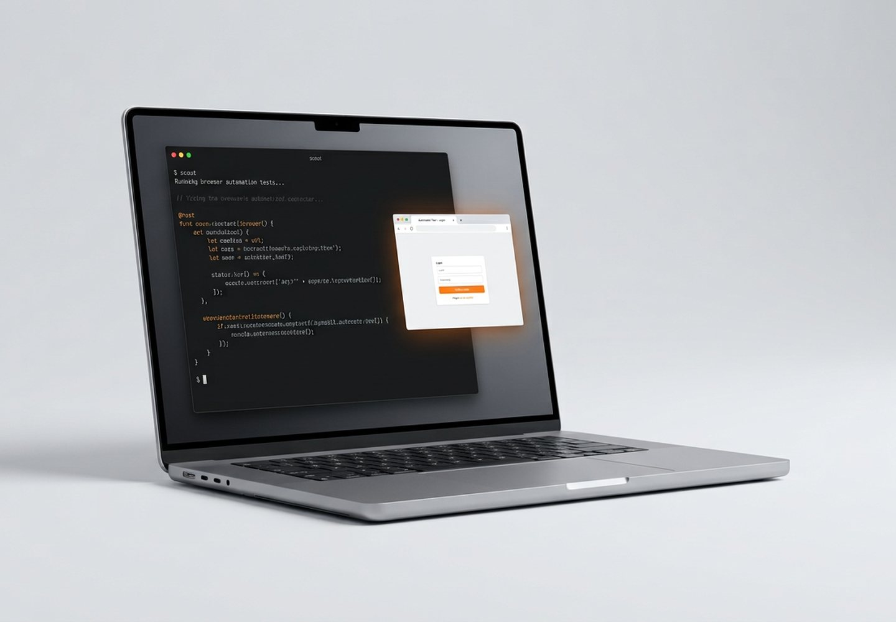
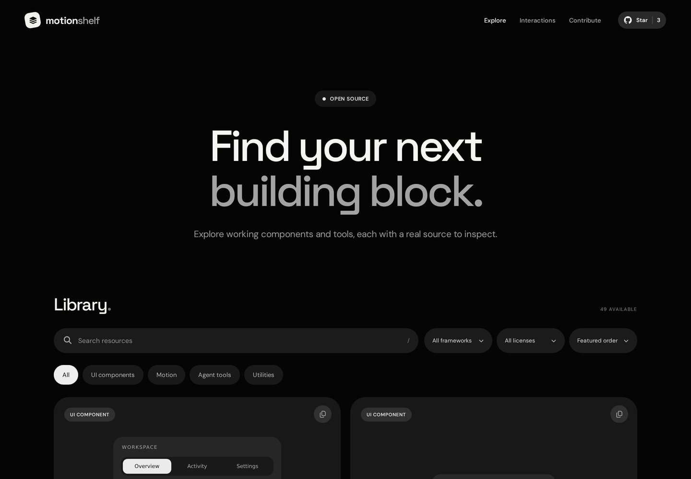
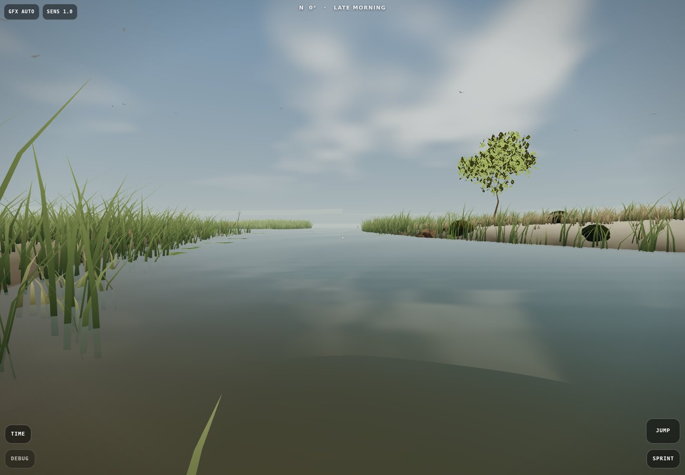
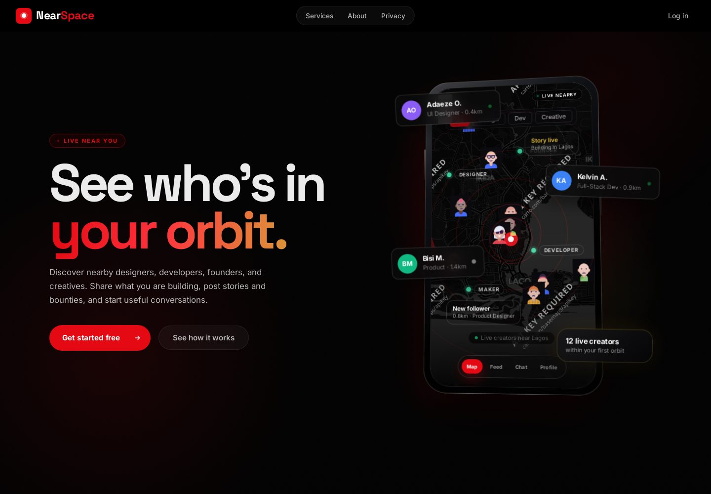
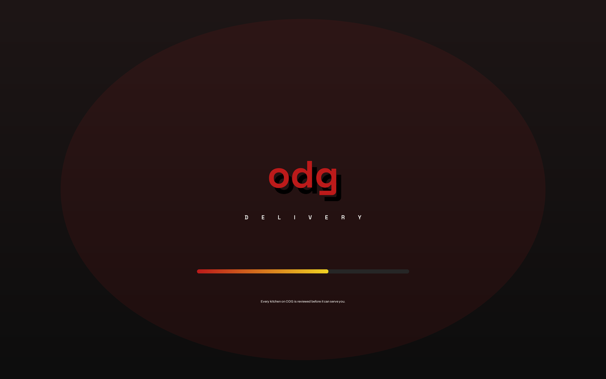
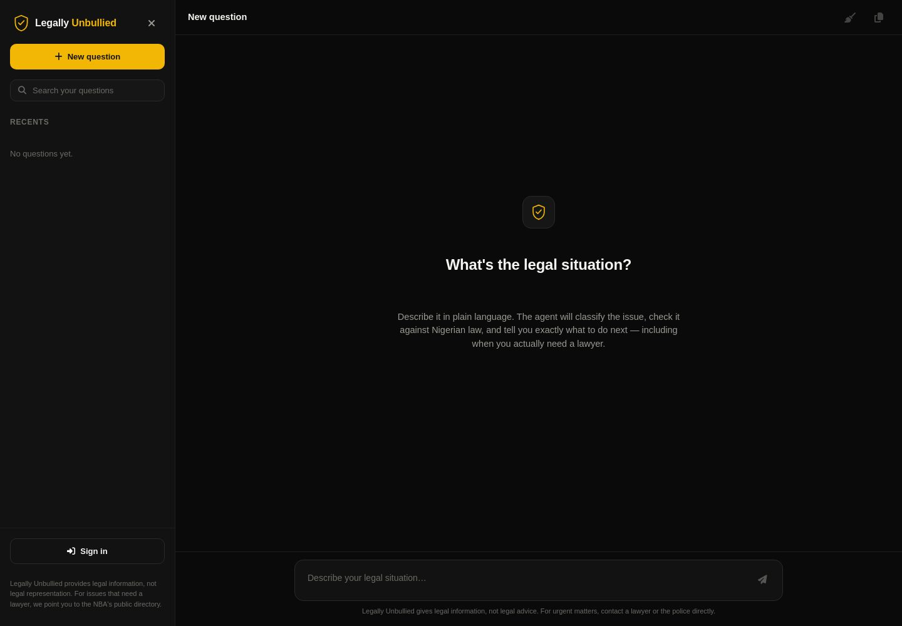

Scout
Scout is a lightweight Rust browser-automation runtime: one ~5 MB binary that fetches pages, runs sandboxed JavaScript, fills forms and extracts structured data. No Chromium needed.
View on GitHubHi, I’m Farouq, a design engineer from Lagos building web apps, AI products and interfaces for everyday use.
What I have built, most recent first
At Scout, I built a browser-automation runtime in Rust for developers and AI agents who need the web without carrying Chromium around.
Key Contributions and Accomplishments:
At MotionShelf, I built a library of copyable first-party UI examples and offline developer tools, with selected links to upstream open-source projects.
Key Contributions and Accomplishments:
At Nearspace, I built a location-based creator community for finding nearby builders and professionals. It has production users and a private codebase. Case study on request.
Key Contributions and Accomplishments:
At ForgeAI, I built a local-first AI coding assistant for Android. No server required. The model runs on the phone itself.
Key Contributions and Accomplishments:
At ODG Deliveries, I built food delivery for Ibadan around reviewed kitchens.
Key Contributions and Accomplishments:
Tools and habits I use to ship products
Building AI products, including on-device tools with no server in the loop
JavaScript/TypeScript and React interfaces that feel considered
Designing the interface and the system underneath it
PWAs and native apps built for phones first
Node, Express and Postgres backends that stay understandable
Firebase RTDB presence and cache-first Firestore reads
Tests are part of the feature, not a follow-up task
Bundle budgets, load times and the unsexy parts done properly
Hover states, spacing and transitions that make interfaces feel finished
Selected work, most recent first

Scout is a lightweight Rust browser-automation runtime: one ~5 MB binary that fetches pages, runs sandboxed JavaScript, fills forms and extracts structured data. No Chromium needed.
View on GitHub
MotionShelf is an open-source library of copyable UI examples and offline developer tools, with live previews and exports for vanilla JavaScript, React, Vue and Svelte.
View Website
Middleground is a first-person wetland exploration game in the browser. Okavango Marsh has seeded terrain, a 36-minute day-night cycle and procedural nature audio.
View on GitHub
Nearspace is a proximity-first network for tech creators, with a live map, nearby discovery and a builder feed for real-world collaboration.
View Website
ODG Deliveries is food delivery for Ibadan, built around reviewed kitchens. Its four roles share one Postgres database and Express API.
View Website
Legally Unbullied is an evidence-grounded AI agent for Nigerian law, retrieving real statutes and answering with cited, plain-language guidance people can act on.
View WebsiteHow the things I ship actually work
I’m Raji Adewunmi Farouq, Graphic Miles, a developer and builder from Lagos. I’ve been in tech since 2021, back when I was in secondary school. I started out building websites and designing content: YouTube thumbnails, flyers and print. These days I build and ship my own products.
I care about details many people skip: hover states, spacing and load times. They separate “it works” from “it feels considered.” Tests are part of the feature, not a follow-up task, and bundle budgets are a design constraint, not an afterthought.
I am open to frontend builds, product interfaces, AI automation and backend integrations. If you have a product to build or an interface to improve, email me at rfarouq69@gmail.com.
Connect with meFind me on any of these platforms